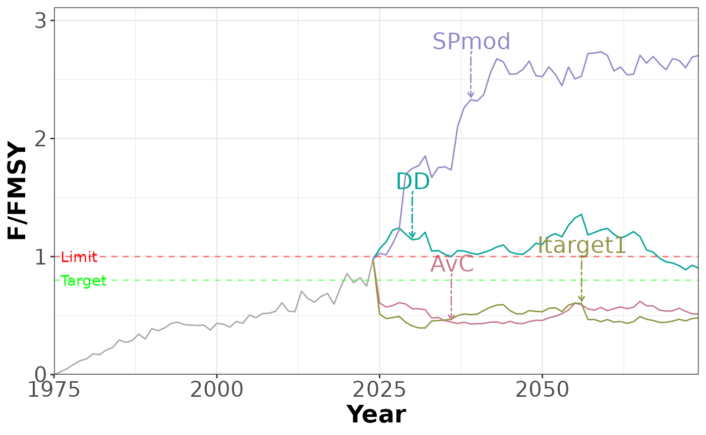
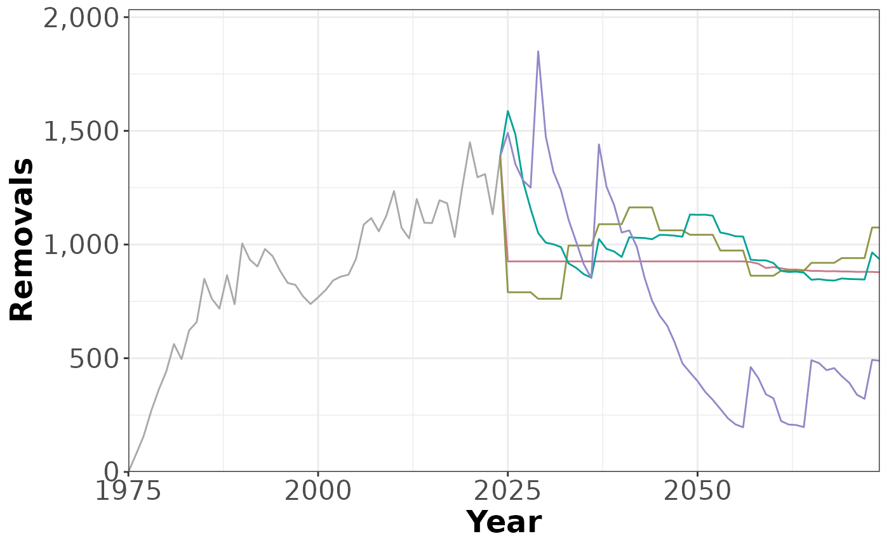
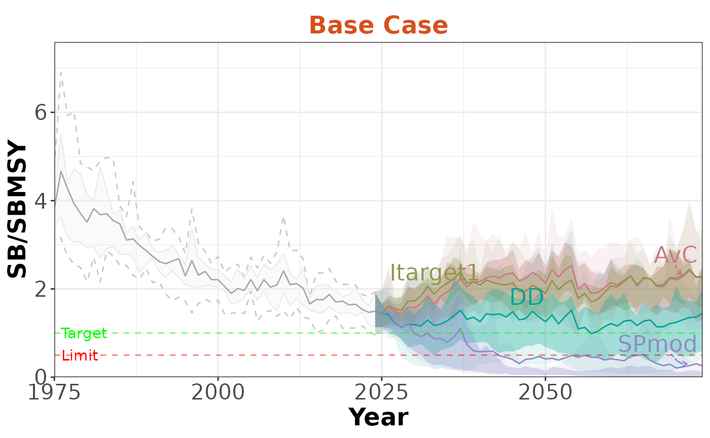
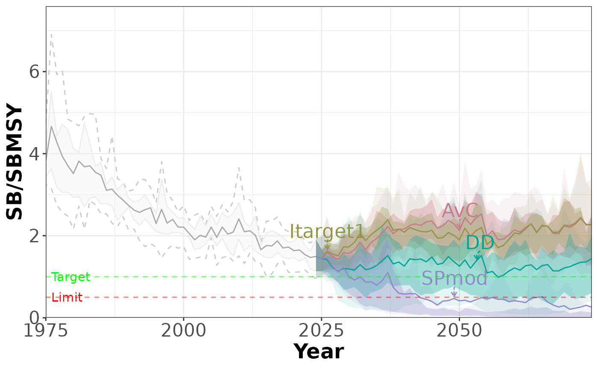
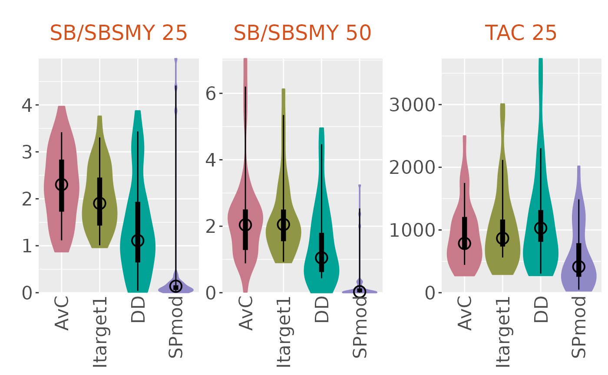
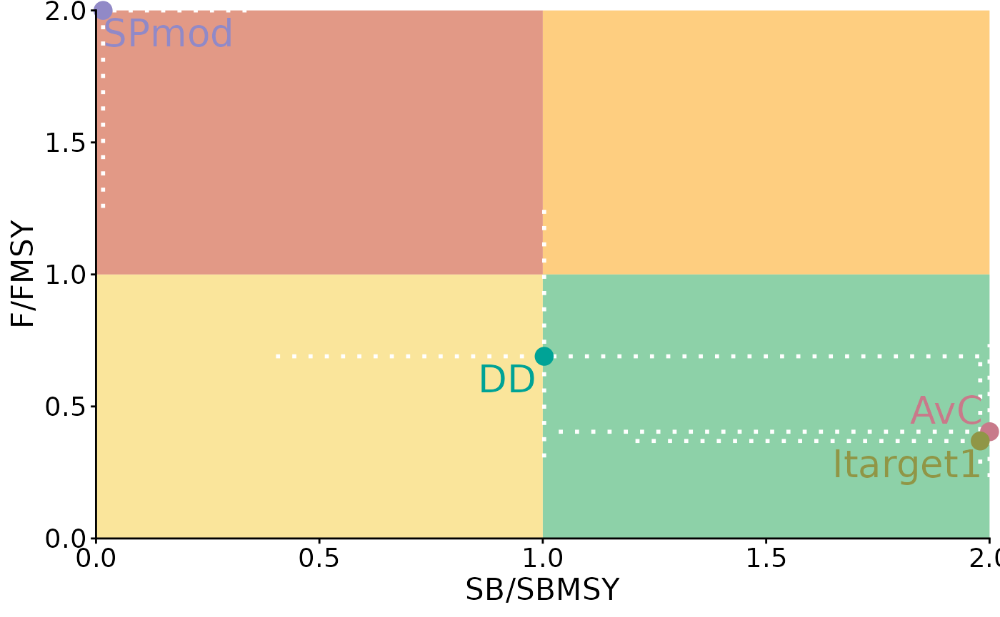
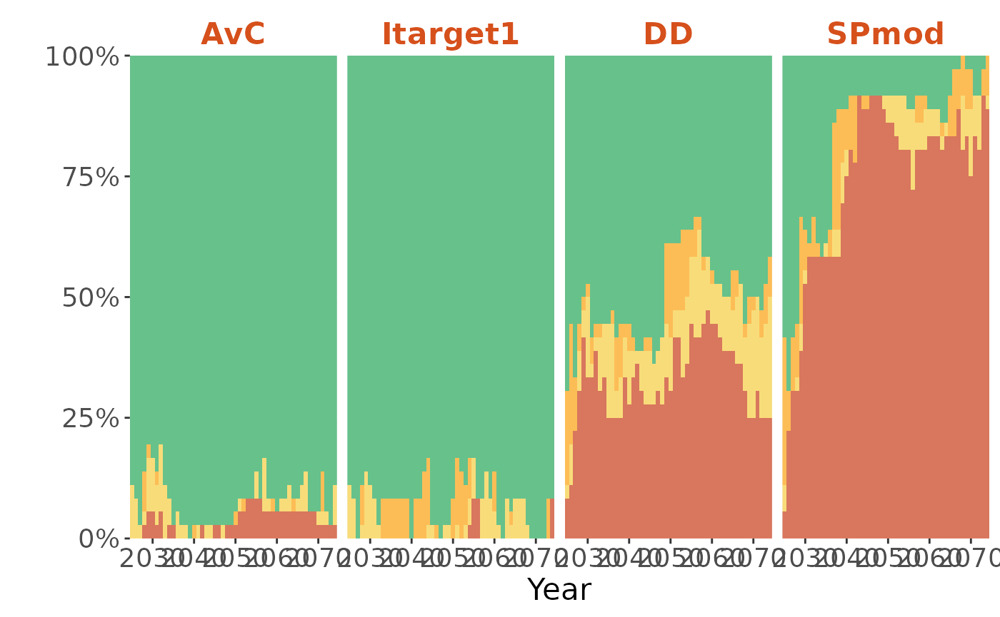
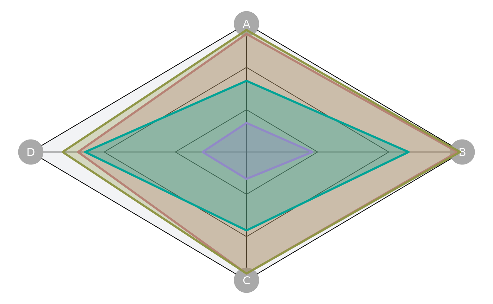
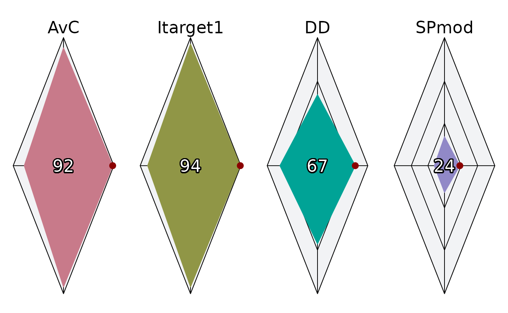
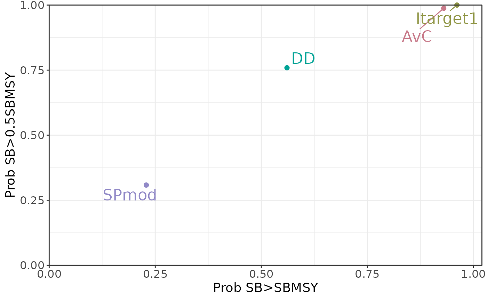

Slick Developer's Guide
DevelopersGuide.RmdIntroduction
Slick is an R package designed for
visualizing and exploring results of a Management Strategy Evaluation
(MSE).
Slick allows MSE developers and analysts to prepare
their MSE results in a standardized data structure, easily generate
publication quality figures and tables, and present and explore the MSE
results in an interactive application.
This document is a guide for analysts who wish to use
Slick to summarize and present their MSE results.
Installing Slick
Slick will be released on the CRAN in the future.
In the meantime, Slick can be installed from Github:
# install.packages('pak')
pak::pkg_install('blue-matter/Slick')
library(Slick)Reporting Issues and Bugs
Please use the Issues feature in the GitHub repository to report issues or bugs. Be sure to include a reproducible example so the issue can be recreated for debugging. Pull Requests are also welcome.
Acknowledgements
Slick was developed by Blue Matter Science and
designed and commissioned by The Ocean
Foundation’s International Fisheries Conservation Project and harveststrategies.org, with
support from The Pew Charitable
Trusts and the Common
Oceans Tuna Fisheries Project which is funded by GEF
and implemented by the FAO.
The prototype figure designs were developed by 5W Infographics.
Slick is under going further development. All feedback
is welcome. Please contact Shana
Miller with any comments or suggestions for further development.
The Slick Object
To use Slick, MSE results must be compiled into a Slick Object. The
object is designed to be compatible with results from any MSE
framework.
The Slick Object contains all of the information shown in the plots and tables, as well as metadata information such as title, introduction, and author details.
The contents of the Slick Object can be grouped into the following categories:
- Metadata: information including the title, introduction, and author details
- MPs: details of the Management Procedures
- OMs: factors, levels, and other information relating to the Operating Models
- Plots: details and values of the Performance Indicators for the Slick Plots
The Slick Plots
A Slick Object can include the following plots:
- Time Series: Plots the time series of a user-specified variable (e.g., yield, biomass) during the historical period and the projection period for each management procedure.
- Boxplot: Displays the minimum, first quartile, median, third quartile, and maximum from a set of results. Includes an option to display the data as a violin plot.
- Kobe: Compares the performance of MPs with respect to biomass (on the x-axis) and fishing mortality (on the y-axis). Includes an option to display the data as a Kobe Time plot, which shows the percentage of runs that fall in each of the Kobe quadrants in each projection year.
- Quilt: A table of performance indicators for each management procedure, with colored shading to indicate better/worse performance.
- Spider: Shows results for three or more performance indicators, each represented on an axis starting from the same center point. Sometimes also called a Radar plot.
- Tradeoff: Scatter plot comparing two performance indicators.
A valid Slick Object must include at least one Slick Plot.
The Slick App
Slick can be used to rapidly create standardized plots
and tables of MSE results directly from the R console. See the sections
below for examples.
The plots and tables can also be viewed in the Slick App, an interactive application developed with Shiny. The Slick App allows users to upload their data and customize the plots by filtering by management procedures, operating models, and performance indicators.
The App can be launched directly from the R console with:
App()The App is also hosted online.
The online App is publicly accessible and can be used for presenting and examining MSE results to stakeholders and decision-makers.
Analysts can either share their Slick Object with their audience directly for them to upload into the App, or analysts can upload their Slick Object to the Slick Object Library, where it will be added to the list of Slick Objects that can be loaded directly within the App.
Example MSEs
In order to populate the example Slick Object, we need to define some operating models (OMs), and some management procedures (MPs), and generate some quantitative values for the Performance Indicators relating to each Slick Plot.
To do this, we will be using the openMSE platform to create example MSE objects for a set of MPs and several different OMs.
To reproduce this example, you will need to install the
openMSE package and run the code in the following
sub-sections.
Alternatively, you can follow the code in the plotting sections below and replace the example OMs, MPs, and Performance Indicator values shown here with those from your own MSE.
Generate Operating Models
In this example, we are creating three operating models:
- Base: Base Case model for an (entirely fictional) Albacore fishery
- Low M: A robustness model where natural mortality (M) is 25% lower than the Base Case model
- High M: A robustness model were M is 33% higher than the Base Case model
nsim <- 12
OM_Base <- new('OM', Albacore, Generic_IncE, Generic_Obs, nsim=nsim)
OM_Base@D <- c(0.3,0.4)
OM_LowM <- OM_HighM <- OM_Base
OM_LowM@M <- OM_Base@M * 0.75
OM_HighM@M <- OM_Base@M * 1.3333Each OM has 12 individual simulations (nsim=12). The OMs
include uncertainty in the life-history parameters and the depletion at
the end of the historical period (D=c(0.3,0.4)).
Specify Management Procedures
We are using four example management procedures from the
DLMtool package:
- AvC: the TAC is fixed for all years to the average catch from the historical period
- Itarget1: the TAC is iteratively adjusted to reach a target CPUE
- DD: A simple delay-difference assessment model is used to estimate current biomass and , and
- SPmod: TAC is incrementally adjusted based on the apparent trend in surplus production.
MPs <- c('AvC', 'Itarget1', 'DD', 'SPmod')These MPs are only being used here as examples, so the details don’t
really matter. But if you’re interested you can see the DLMtool
help documentation for more details on each MP.
Run Simulations
The runMSE function is used to spool up the historical
fishery dynamics and run the closed-loop simulation testing of the four
MPs for each of the three OMS:
MSE_Base <- runMSE(OM_Base, MPs=MPs, silent = TRUE)
MSE_LowM <- runMSE(OM_LowM, MPs=MPs, silent = TRUE)
MSE_HighM <- runMSE(OM_HighM, MPs=MPs, silent = TRUE)
MSE_LowH <- runMSE(OM_LowM, MPs=MPs, silent = TRUE)
MSE_HighH <- runMSE(OM_HighM, MPs=MPs, silent = TRUE)In the sections below, these MSE objects will be used to calculate the performance indicators for each Slick Plot.
Creating a Slick Object
To create a Slick Object, simply use the Slick()
function:
slick <- Slick()slick is an S4 object of class Slick:
class(slick)
#> [1] "Slick"
#> attr(,"package")
#> [1] "Slick"The slots in class Slick objects correspond to
information such as the title, subtitle, and author of the
Slick object, the operating models (OMs), and management
procedures (MPs) included in the Slick object, and the
details corresponding to each of the Slick
Plots:
slotNames('Slick')
#> [1] "Title" "Subtitle" "Date" "Author" "Email"
#> [6] "Institution" "Introduction" "MPs" "OMs" "Boxplot"
#> [11] "Kobe" "Quilt" "Spider" "Timeseries" "Tradeoff"Each slot can be accessed and assigned using a function corresponding to the slot name; e.g.:
The sections below provide examples for populating the
Slick object.
Metadata
The Title, Subtitle, Date,
Author, Email, and Institution
functions are used to populate the corresponding information in the
Slick Object.
These metadata are optional, but are useful when presenting the Slick results in the App:
Title(slick) <- 'An Example Slick Object'
Subtitle(slick) <- "This is the subtitle"
Date(slick) <- Sys.Date()
Author(slick) <- 'Adrian Hordyk'
Email(slick) <- "[adrian@bluematterscience.com](mailto:adrian@bluematterscience.com)"
Institution(slick) <- "[Blue Matter Science](bluematterscience.com)"The same functions are used to return the information stored in the Slick Object:
Title(slick)
#> [1] "An Example Slick Object"
Subtitle(slick)
#> [1] "This is the subtitle"
Date(slick)
#> [1] "2024-10-03"
Author(slick)
#> [1] "Adrian Hordyk"
Email(slick)
#> [1] "[adrian@bluematterscience.com](mailto:adrian@bluematterscience.com)"
Institution(slick)
#> [1] "[Blue Matter Science](bluematterscience.com)"Markdown
With the exception of Date, Markdown can be used to
include links, text styling, etc, for any of the text in the Slick
Object. For example:
Introduction(slick) <- "
This is an example Slick object. It has been created for the purposes of demonstrating the key features of Slick.
The introduction can include paragraphs as well as Markdown such as *italics* and **bold** text and [Links](https://slick.bluematterscience.com).
"The Markdown will be automatically converted to HTML in the App. Use
the markdown=TRUE argument to print the HTML code in the
console (in this document the HTML text is rendered directly between the
horizontal lines):
Introduction(slick, markdown = TRUE)This is an example Slick object. It has been created for the purposes of demonstrating the key features of Slick.
The introduction can include paragraphs as well as Markdown such as italics and bold text and Links.
Multiple Authors
Author should be a character vector with an element for
each author:
Email, and Institution must be character
vectors of the same length as Author:
Email(slick) <- c('[a.author@email.com](mailto:a.author@email.com)',
'[b.author@email.com](mailto:b.author@email.com)')
Institution(slick) <- c('A Institution', 'B Institution')Multi-Language Support
Title, Subtitle, and
Introduction support multiple languages. Three languages
are supported:
-
en: English -
es: Spanish -
fr: French
Multiple languages can included by providing a named list:
Title(slick) <- list(en='An Example Slick Object',
es='Un ejemplo de un objeto Slick',
fr="Un exemple d'objet Slick")
Title(slick)
#> [1] "An Example Slick Object"
Title(slick, 'es')
#> [1] "Un ejemplo de un objeto Slick"
Title(slick, 'fr')
#> [1] "Un exemple d'objet Slick"Most text throughout the Slick Object supports both Markdown and multiple languages.
The App has a dropdown menu that allows users to select their preferred language.
MPs Object
The MPs Object contains the codes, labels, and descriptions of the management procedures (MPs) included in the Slick Object, as well as other options such as the colors to use in the plots, and preset buttons that will appear in the App.
All Slick Objects must have a completed MPs Object.
The easiest way to build a Slick Object is to create and populate the sub-components and then add them to the Slick Object.
Code, Label, and Description
Code, and Label are both required, as they
are used in the plots and tables, while Description is
optional.
In this example, there are 4 MPs:
mps <- MPs()
Code(mps) <- c('AvC', 'Itarget1', 'DD', 'SPmod')
Label(mps) <- c('Average Catch',
'Index Target',
'Delay Difference',
'Surplus Production')
Description(mps) <- c('TAC is fixed for all years to the average catch from the historical period',
'TAC is iteratively adjusted to reach a target CPUE',
'Delay-difference assessment model used to estimate current biomass $(B)$ and $U_{MSY}$, and $\text{TAC}= U_{MSY}B$',
'TAC is incrementally adjusted based on the apparent trend in surplus production')This could have also been done as:
mps <- MPs(Code=c('AvC', 'Itarget1', 'DD', 'SPmod'),
Label=c('Average Catch',
'Index Target',
'Delay Difference',
'Surplus Production'),
Description = c('TAC is fixed for all years to the average catch from the historical period',
'TAC is iteratively adjusted to reach a target CPUE',
'Delay-difference assessment model used to estimate current biomass $(B)$ and $U_{MSY}$, and $\text{TAC}= U_{MSY}B$',
'TAC is incrementally adjusted based on the apparent trend in surplus production'))Or using the Metadata function:
Metadata(mps) <- data.frame(
Code=c('AvC', 'Itarget1', 'DD', 'SPmod'),
Label=c('Average Catch',
'Index Target',
'Delay Difference',
'Surplus Production'),
Description=c('TAC is fixed for all years to the average catch from the historical period',
'TAC is iteratively adjusted to reach a target CPUE',
'Delay-difference assessment model used to estimate current biomass $(B)$ and $U_{MSY}$, and $\text{TAC}= U_{MSY}B$',
'TAC is incrementally adjusted based on the apparent trend in surplus production')
)
Metadata(mps)
#> Code Label
#> 1 AvC Average Catch
#> 2 Itarget1 Index Target
#> 3 DD Delay Difference
#> 4 SPmod Surplus Production
#> Description
#> 1 TAC is fixed for all years to the average catch from the historical period
#> 2 TAC is iteratively adjusted to reach a target CPUE
#> 3 Delay-difference assessment model used to estimate current biomass $(B)$ and $U_{MSY}$, and $\text{TAC}= U_{MSY}B$
#> 4 TAC is incrementally adjusted based on the apparent trend in surplus production
#> Color
#> 1 #C87A8A
#> 2 #909646
#> 3 #00A396
#> 4 #9189C7Color
Color is used to set the colors of the MPs shown in the
plots. If not specified, default colors will be used:
Preset
Preset is optional. It is used to add buttons to the App
where users can rapidly select different sets of MPs.
For an MPs Object, Preset is an optional named list,
with numeric values indicating the MPs to be selected by the
Preset buttons in the App:
Adding MPs to Slick Object
Once the MPs Object is complete, is can be added to the Slick Object:
MPs(slick) <- mpsOMs Object
The OMs Object describes the structure of the operating models contained in the Slick Object.
All Slick objects must have a completed OMs Object.
Create an OMs Object
A new OMs Object can be created with the OMs
function:
oms <- OMs()The OMs Object contains two mandatory slots (Factors and
Design) and one optional slot (Preset).
Factors
Factors is a data.frame with column
headings Factor, Level, and
Description. It is used to describe the various
factors, and levels within each factor, of the operating models included
in the Slick Object.
Here is a simple example of a Slick Object that includes results from 6 OMs, spanning three levels on uncertainty in natural mortality (M) and two levels of steepness (h):
Factors(oms) <- data.frame(Factor='M',
Level=c('Base', 'Low M', 'High M'),
Description=c('Base Case',
'Lower Natural Mortality',
'Higher Natural Mortality')
)
Factors(oms)
#> Factor Level Description
#> 1 M Base Base Case
#> 2 M Low M Lower Natural Mortality
#> 3 M High M Higher Natural MortalityDesign
The Design matrix is nOM rows and
nFactor columns. The values in each column should either be
numeric values indicating the levels for the corresponding factor, or
the actual level values (i.e., Factors$Level) that
correspond to each OM. The column names of Design must
match the names of the factors (i.e, Factors$Level).
Here is the Design matrix corresponding with the
Factors above:
Design(oms) <- data.frame(M=c('Base', 'Low M', 'High M'))
Design(oms)
#> M
#> 1 Base
#> 2 Low M
#> 3 High MIt can sometimes be helpful to add names or labels to the operating
models listed in Design. This can be done using
rownames:
Preset
Preset is optional. It is used to add buttons to the App where users can rapidly select different sets of
OMs.
For OMs objects, Preset is a multi-level
list. Each element in first level lists must be named. The names are
used to display the ‘Preset’ button in the App.
The second level of each named list element must be a list length
nFactors, which each element containing numeric values
representing the levels within each factor that should be included under
that preset.
For example:
Adding OMs to Slick Object
The OMs object is now complete:
oms
#>
#> ── An object of class `OMs` ────────────────────────────────────────────────────
#>
#> ── `Factors` ──
#>
#> Factor Level Description
#> 1 M Base Base Case
#> 2 M Low M Lower Natural Mortality
#> 3 M High M Higher Natural Mortality
#> ── `Design` ──
#> M
#> Base Case Base
#> Less Productive Low M
#> More Productive High M
#> ── `Preset` ──
#> ── Base Case
#> 1
#>
#>
#> ── Low M
#>
#> 2
#>
#>
#> ── High M
#>
#> 3
#>
#>
#> ── All
#>
#> 1
#> 2
#> 3The Check function can be used to make sure there are no
errors:
Check(oms)
#>
#> ── Checking: "OMs" ──
#>
#> ✔ CompleteOnce the OMs object is complete, it can be added to the
Slick object:
OMs(slick) <- omsTime Series Plot
Information for the Time Series plot is stored in a Timeseries Object.
A Timeseries Object can be created using the
Timeseries function:
timeseries <- Timeseries()Code, Label, and Description
Either the Code, Label, and
Description functions or the Metadata function
can be used to add the metadata information to a Timeseries Object.
In this example there are three performance indicators for the Timeseries Object:
Metadata(timeseries) <- data.frame(
Code=c('SB/SBMSY', 'F/FMSY', 'Removals'),
Label=c('SB/SBMSY', 'F/FMSY', 'Removals'),
Description=c('Spawning biomass relative to equilibrium spawning biomass corresponding with maximum sustainable yield (MSY)',
'Fishing mortality relative to F_MSY',
'Removals (Landings + Discards)')
)
Code(timeseries)
#> [1] "SB/SBMSY" "F/FMSY" "Removals"All plotting functions support Multi-Language Support for the Metadata information.
Time, TimeNow, and TimeLab
The Time slot in the Timeseries Object is a numeric
vector with the values for the historical and projection time-steps. In
this example, we have 50 historical years and 50 projection years:
TimeNow is a numeric value matching the last historical
time step (i.e., current time) in Time:
TimeNow(timeseries) <- 2024TimeLab is a character string providing the name of the
time step in Time. A named list can be used for Multi-Language Support:
TimeLab(timeseries) <- 'Year'Value
Value is a 5-dimensional array containing the values of
the performance indicators for each simulation, OM, MP, performance
indicator, and time-step (historical and projection):
nOM <- nrow(Design(slick))
nMP <- length(Code(mps))
nPI <- length(Code(timeseries))
nTS <- length(Time(timeseries))
Value(timeseries) <- array(NA, dim=c(nsim, nOM, nMP, nPI, nTS))This chunk of code calculates the three performance indicators for
each OM from the openMSE results generated above. You can
ignore it if you have your own MSE data.
# SB/SBMSY
SB_SBMSY_Base <- abind::abind(replicate(nMP, MSE_Base@SSB_hist) |> aperm(c(1,3,2)),
MSE_Base@SSB,
along=3)/MSE_Base@RefPoint$SSBMSY
SB_SBMSY_LowM <- abind::abind(replicate(nMP, MSE_LowM@SSB_hist) |> aperm(c(1,3,2)),
MSE_LowM@SSB,
along=3)/MSE_LowM@RefPoint$SSBMSY
SB_SBMSY_HighM <- abind::abind(replicate(nMP, MSE_HighM@SSB_hist) |> aperm(c(1,3,2)),
MSE_HighM@SSB,
along=3)/MSE_HighM@RefPoint$SSBMSY
# F/FMSY
F_FMSY_Base <- abind::abind(replicate(nMP, MSE_Base@FM_hist) |> aperm(c(1,3,2)),
MSE_Base@FM)/MSE_Base@RefPoint$FMSY
F_FMSY_LowM <- abind::abind(replicate(nMP, MSE_LowM@FM_hist) |> aperm(c(1,3,2)),
MSE_LowM@FM)/MSE_LowM@RefPoint$FMSY
F_FMSY_HighM <- abind::abind(replicate(nMP, MSE_HighM@FM_hist) |> aperm(c(1,3,2)),
MSE_HighM@FM)/MSE_HighM@RefPoint$FMSY
# Removals
Removals_Base <- abind::abind(replicate(nMP, apply(MSE_Base@Hist@TSdata$Removals, 1:2, sum))
|> aperm(c(1,3,2)),
MSE_Base@Removals)
Removals_LowM <- abind::abind(replicate(nMP, apply(MSE_LowM@Hist@TSdata$Removals, 1:2, sum))
|> aperm(c(1,3,2)),
MSE_LowM@Removals)
Removals_HighM <- abind::abind(replicate(nMP, apply(MSE_HighM@Hist@TSdata$Removals, 1:2, sum))
|> aperm(c(1,3,2)),
MSE_HighM@Removals)Once the performance indicators have been calculated for the Time
Series plot, they can be added to the Value slot:
# SB/SBMSY
Value(timeseries)[,1,,1,] <- SB_SBMSY_Base
Value(timeseries)[,2,,1,] <- SB_SBMSY_LowM
Value(timeseries)[,3,,1,] <- SB_SBMSY_HighM
# F/FMSY
Value(timeseries)[,1,,2,] <- F_FMSY_Base
Value(timeseries)[,2,,2,] <- F_FMSY_LowM
Value(timeseries)[,3,,2,] <- F_FMSY_HighM
# Removals
Value(timeseries)[,1,,3,] <- Removals_Base
Value(timeseries)[,2,,3,] <- Removals_LowM
Value(timeseries)[,3,,3,] <- Removals_HighMPreset
Each plotting object has a Preset slot. However, this
feature is not currently supported for Timeseries
plots.
Target and Limit
Target and Limit are optional. They are
used to provide horizontal lines on the time series plot indicating the
target and limit (if applicable) for a performance indicator. The color
and labels can be
Adding Timeseries Object to Slick Object
Once the Timeseries Object is complete it can be checked:
Check(timeseries)
#>
#> ── Checking: "Timeseries" ──
#>
#> ✔ Completeand then added to our Slick Object:
Timeseries(slick) <- timeseriesPlotting the Timeseries Object
The plotTimeseries function is used to generate the Time
Series plot:
plotTimeseries(slick) # PI 1
plotTimeseries(slick, 2, # PI 2, no quantiles
includeQuants = FALSE)
plotTimeseries(slick,3, # PI 3, no quantiles, no MP labels
includeQuants = FALSE,
includeLabels = FALSE)
The plot can be faceted by management procedure:
plotTimeseries(slick, byMP=TRUE)or by operating model:
plotTimeseries(slick, byOM=TRUE)or both:
plotTimeseries(slick, byOM=TRUE, byMP=TRUE)See ?plotTimeseries
for information on more ways to modify the Time Series plot.
By default, the time series values are calculated as the mean over
the operating models. The FilterSlick function can be used
to filter the Slick Object to specific OMs, MPs, or PIs.
Here we are filtering to only include the Base Case OM (OM 1):
slick_OM1 <- FilterSlick(slick, OMs=1, plot='Timeseries')
plotTimeseries(slick_OM1, byOM=TRUE)
plotTimeseries(slick_OM1) # same plot
Checking and Testing
The Slick Object is now complete with the minimum requirements:
- A complete
MPsObject - A complete
OMsObject - and at least one complete Plot Object (
Timeseriesin this case)
The Slick Object can be checked for completeness with the
Check function:
Check(slick)
#>
#> ── Checking: "Slick" ──
#>
#> ── Checking: "MPs"
#> ✔ Complete
#>
#> ── Checking: "OMs"
#> ✔ Complete
#>
#> ── Checking: "Boxplot"
#> ℹ Object is empty
#>
#> ── Checking: "Quilt"
#> ℹ Object is empty
#>
#> ── Checking: "Kobe"
#> ℹ Object is empty
#>
#> ── Checking: "Spider"
#> ℹ Object is empty
#>
#> ── Checking: "Timeseries"
#> ✔ Complete
#>
#> ── Checking: "Tradeoff"
#> ℹ Object is emptyand loaded directly into the App as a named
argument:
App(slick=slick)Boxplot Plot
The documentation for the remaining plots is briefer and assumes you’ve read the Time Series Plot section.
Information for the Boxplot is stored in a Boxplot Object.
A Boxplot Object can be created using the
Boxplot function. Here we are populating the metadata
directly when we create the Boxplot object:
boxplot <- Boxplot(Code=c('SB/SBSMY 25', 'SB/SBSMY 50', 'TAC 25'),
Label=c('SB/SBMSY Year 25', 'SB/SBSMY Year 50', 'TAC Year 25'),
Description=c('SB/SBMSY in the 25th projection year',
'SB/SBMSY in the last year',
'TAC in the 25th projection year'))Value is a numeric array containing the values of the
performance indicators included in the Boxplot object.
Value must have dimensions
c(nsim, nOM, nMP, nPI):
nOM <- nrow(Design(slick))
nMP <- length(Code(mps))
nPI <- length(Code(boxplot))
Value(boxplot) <- array(NA, dim=c(nsim, nOM, nMP, nPI))
Value(boxplot)[,1,,1] <- MSE_Base@SB_SBMSY[,,25]
Value(boxplot)[,2,,1] <- MSE_LowM@SB_SBMSY[,,25]
Value(boxplot)[,3,,1] <- MSE_HighM@SB_SBMSY[,,25]
Value(boxplot)[,1,,2] <- MSE_Base@SB_SBMSY[,,50]
Value(boxplot)[,2,,2] <- MSE_LowM@SB_SBMSY[,,50]
Value(boxplot)[,3,,2] <- MSE_HighM@SB_SBMSY[,,50]
Value(boxplot)[,1,,3] <- MSE_Base@TAC[,,25]
Value(boxplot)[,2,,3] <- MSE_LowM@TAC[,,25]
Value(boxplot)[,3,,3] <- MSE_HighM@TAC[,,25]Check the Boxplot object and add to the Slick
Object:
The plotBoxplot function is used to create the Boxplot
from a Slick Object:
plotBoxplot(slick)There is an option for violin plots:
plotBoxplot(slick, type='violin')or both types:
plotBoxplot(slick, type='both')
The byOM=TRUE argument creates a boxplot for a given
performance indicator for each OM in the Slick Object:
plotBoxplot(slick, byOM=TRUE)See ?plotBoxplot for
more options for the plotBoxplot function.
The FilterSlick can be used to filter the OMs and/or MPs
to include in a given plot:
plotBoxplot(FilterSlick(slick, MPs=1:3, OMs=1:2, plot='Boxplot'),
byOM=TRUE)Kobe Plot
Information for the Kobe Plot is stored in a Kobe Object.
A Kobe Object can be created using the Kobe
function. Here we are populating the metadata directly when we create
the Kobe object:
kobe <- Kobe(Code=c('SB/SBMSY', 'F/FMSY'),
Label=c('SB/SBMSY', 'F/FMSY'),
Description = c('Spawning biomass relative to SB_MSY',
'Fishing mortality relative to F_MSY')
)The Time slot of a Kobe Object contains numeric values
for the projection time-steps:
Value is a numeric array containing the values of the
performance indicators included in the Kobe Object.
Value must have dimensions
c(nsim, nOM, nMP, nPI, nTS):
nOM <- nrow(Design(slick))
nMP <- length(Code(mps))
nPI <- length(Code(kobe))
nTS <- length(Time(kobe))
Value(kobe) <- array(NA, dim=c(nsim, nOM, nMP, nPI, nTS))
Value(kobe)[,1,,1,] <- MSE_Base@SB_SBMSY
Value(kobe)[,2,,1,] <- MSE_LowM@SB_SBMSY
Value(kobe)[,3,,1,] <- MSE_HighM@SB_SBMSY
Value(kobe)[,1,,2,] <- MSE_Base@F_FMSY
Value(kobe)[,2,,2,] <- MSE_LowM@F_FMSY
Value(kobe)[,3,,2,] <- MSE_HighM@F_FMSYCheck and add to the Slick Object:
Plot the Kobe plot:
plotKobe(slick)
Plot the Kobe Time plot:
plotKobe(slick, Time=TRUE)
See ?plotKobe
for more options for the plotKobe function.
Quilt Plot
Information for the Quilt Plot is stored in a Quilt Object.
A Quilt Object can be created using the Quilt
function. Here we are populating the metadata directly when we create
the Quilt object:
quilt <- Quilt(Code=c('PGK',
'P100',
'PNOF',
'Mean TAC'),
Label=c('Prob. Green Kobe',
'Prob SB>SBMSY',
'Prob. Not Overfishing',
'Mean Total Allowable Catch'),
Description = c('Probability of being in the green region of Kobe plot over the projection period',
'Probability spawning biomass is greater than SB_MSY over the projection period',
'Probability of not overfishing over the projection period',
'Mean Total Allowable Catch over the projection period'))Value is a numeric array containing the values of the
performance indicators included in the Quilt Object.
Value must have dimensions
c(nOM, nMP, nPI):
nPI <- length(Code(quilt))
Value(quilt) <- array(NA, dim=c(nOM, nMP, nPI))
Value(quilt)[1,,1] <- apply(MSE_Base@SB_SBMSY > 1 & MSE_Base@F_FMSY < 1, 2, mean)
Value(quilt)[2,,1] <- apply(MSE_LowM@SB_SBMSY > 1 & MSE_LowM@F_FMSY < 1, 2, mean)
Value(quilt)[3,,1] <- apply(MSE_HighM@SB_SBMSY > 1 & MSE_HighM@F_FMSY < 1, 2, mean)
Value(quilt)[1,,2] <- apply(MSE_Base@SB_SBMSY > 1, 2, mean)
Value(quilt)[2,,2] <- apply(MSE_LowM@SB_SBMSY > 1, 2, mean)
Value(quilt)[3,,2] <- apply(MSE_HighM@SB_SBMSY > 1, 2, mean)
Value(quilt)[1,,3] <- apply(MSE_Base@F_FMSY < 1, 2, mean)
Value(quilt)[2,,3] <- apply(MSE_LowM@F_FMSY < 1, 2, mean)
Value(quilt)[3,,3] <- apply(MSE_HighM@F_FMSY < 1, 2, mean)
Value(quilt)[1,,4] <- apply(MSE_Base@TAC, 2, mean)
Value(quilt)[2,,4] <- apply(MSE_LowM@TAC, 2, mean)
Value(quilt)[3,,4] <- apply(MSE_HighM@TAC, 2, mean)The MinValue and MaxValue functions can be
used to set minimum and maximum values for calculating the colored
shading for each PI:
Check and add to the Slick Object:
The default Quilt plot:
plotQuilt(slick)Shading scaled between minimum and maximum for each PI:
plotQuilt(slick, minmax=TRUE)A static table with no shading:
plotQuilt(slick, shading=FALSE, kable=TRUE)MP |
PGK |
P100 |
PNOF |
Mean TAC |
|---|---|---|---|---|
AvC |
0.89 |
0.90 |
0.93 |
930 |
Itarget1 |
0.91 |
0.95 |
0.95 |
940 |
DD |
0.48 |
0.53 |
0.60 |
1,000 |
SPmod |
0.16 |
0.22 |
0.20 |
870 |
See ?plotQuilt
for more options for the plotQuilt function.
Spider Plot
Information for the Spider Plot is stored in a Spider Object.
A Spider Object can be created using the Spider
function. Here we are populating the metadata directly when we create
the Spider object:
spider <- Spider(Code=c('P100',
'P50',
'PNOF',
'Yield'),
Label=c('Prob SB>SBMSY',
'Prob SB>0.5SBMSY',
'Prob. Not Overfishing',
'Prob. Mean Yield > 50%'),
Description = c('Probability spawning biomass is greater than SB_MSY over the projection period',
'Probability spawning biomass is greater than 0.5 SB_MSY over the projection period',
'Probability of not overfishing over the projection period',
'Probability mean yield is greater than 50% of the reference yield'))Value is a numeric array containing the values of the
performance indicators included in the Spider Object.
Value must have dimensions
c(nOM, nMP, nPI):
nPI <- length(Code(spider))
Value(spider) <- array(NA, dim=c(nOM, nMP, nPI))
Value(spider)[1,,1] <- MSEtool::P100(MSE_Base)@Mean
Value(spider)[2,,1] <- MSEtool::P100(MSE_LowM)@Mean
Value(spider)[3,,1] <- MSEtool::P100(MSE_HighM)@Mean
Value(spider)[1,,2] <- MSEtool::P50(MSE_Base)@Mean
Value(spider)[2,,2] <- MSEtool::P50(MSE_LowM)@Mean
Value(spider)[3,,2] <- MSEtool::P50(MSE_HighM)@Mean
Value(spider)[1,,3] <- MSEtool::PNOF(MSE_Base)@Mean
Value(spider)[2,,3] <- MSEtool::PNOF(MSE_LowM)@Mean
Value(spider)[3,,3] <- MSEtool::PNOF(MSE_HighM)@Mean
Value(spider)[1,,4] <- MSEtool::LTY(MSE_Base)@Mean
Value(spider)[2,,4] <- MSEtool::LTY(MSE_LowM)@Mean
Value(spider)[3,,4] <- MSEtool::LTY(MSE_HighM)@MeanThere are a few things to consider for the Value of the
Spider plot:
- The values for each Performance Indicator must be on the same scale, with high values indicating better performance
- Values cannot be negative
- All values should be between 0 and 1, or between 0 and 100, with 1 or 100 representing the highest possible value for a Performance Indicator.
Check and add to the Slick Object:
The default Spider Plot:
plotSpider(slick)
Option to include fill color:
plotSpider(slick, fill=TRUE)
Plot by MP:
plotSpider(slick, byMP=TRUE)
Or by OM and MP:
plotSpider(slick, byOM=TRUE, incMean = FALSE)See ?plotSpider for
more options for the plotSpider function.
Tradeoff Plot
Information for the Tradeoff Plot is stored in a Tradeoff Object.
A Tradeoff Object can be created using the
Tradeoff function. Here we are populating the metadata
directly when we create the Tradeoff object:
tradeoff <- Tradeoff(Code=c('P100',
'P50',
'PNOF',
'Yield'),
Label=c('Prob SB>SBMSY',
'Prob SB>0.5SBMSY',
'Prob. Not Overfishing',
'Prob. Mean Yield > 50%'),
Description = c('Probability spawning biomass is greater than SB_MSY over the projection period',
'Probability spawning biomass is greater than 0.5 SB_MSY over the projection period',
'Probability of not overfishing over the projection period',
'Probability mean yield is greater than 50% of the reference yield'))Here we are using the same Performance Indicators as those in the Spider Plot.
Value is a numeric array containing the values of the
performance indicators included in the Tradeoff Object.
Value must have dimensions
c(nOM, nMP, nPI):
nPI <- length(Code(tradeoff))
Value(tradeoff) <- array(NA, dim=c(nOM, nMP, nPI))
Value(tradeoff)[1,,1] <- MSEtool::P100(MSE_Base)@Mean
Value(tradeoff)[2,,1] <- MSEtool::P100(MSE_LowM)@Mean
Value(tradeoff)[3,,1] <- MSEtool::P100(MSE_HighM)@Mean
Value(tradeoff)[1,,2] <- MSEtool::P50(MSE_Base)@Mean
Value(tradeoff)[2,,2] <- MSEtool::P50(MSE_LowM)@Mean
Value(tradeoff)[3,,2] <- MSEtool::P50(MSE_HighM)@Mean
Value(tradeoff)[1,,3] <- MSEtool::PNOF(MSE_Base)@Mean
Value(tradeoff)[2,,3] <- MSEtool::PNOF(MSE_LowM)@Mean
Value(tradeoff)[3,,3] <- MSEtool::PNOF(MSE_HighM)@Mean
Value(tradeoff)[1,,4] <- MSEtool::LTY(MSE_Base)@Mean
Value(tradeoff)[2,,4] <- MSEtool::LTY(MSE_LowM)@Mean
Value(tradeoff)[3,,4] <- MSEtool::LTY(MSE_HighM)@MeanCheck and add to the Slick Object:
The default Tradeoff Plot:
plotTradeoff(slick)
Tradeoff Plot with multiple Performance Indicators:
plotTradeoff(slick, 1:2, 3:4)See ?plotTradeoff for
more options for the plotTradeoff function.